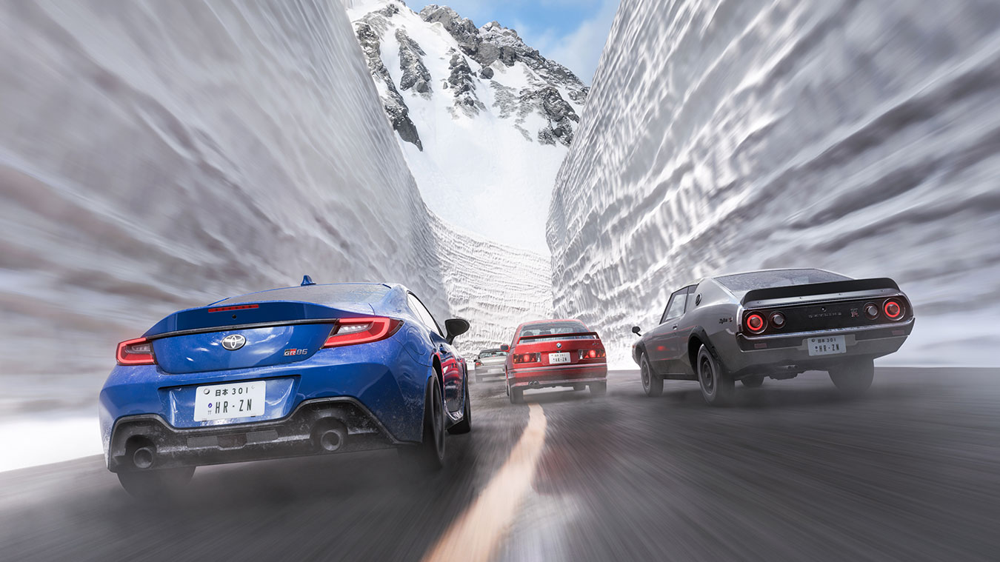

Forza Horizon 6 Japan presents three distinct racing environments, each demanding different techniques and car setups. Tokyo's neon-lit city circuits reward high-horsepower straight-line speed and confident braking into 90-degree corners. The mountain touge passes — inspired by real roads like Mount Akagi's Route 33 — punish mistakes brutally and reward precision over power. The time trial routes span all terrain and test every aspect of your driving simultaneously.
This guide covers each major track type, breaks down individual routes with racing line advice, and matches you with the optimal car for each discipline. Whether you're hunting a personal best or competing in championships, understanding the terrain is half the battle.



Tokyo City Circuits
Tokyo's urban circuits are wide, fast, and forgiving compared to mountain touge. The main circuits loop through Shibuya, skirt Tokyo Bay near Odaiba, and cut through the industrial port zones. These are high-grip asphalt tracks designed for high-speed racing.
Shibuya Sprint
A tight figure-of-eight through Shibuya's intersection. Tight 90-degree corners, fast chicanes. Best for nimble cars under 900kg. Difficulty: Medium. Length: 2.1km.
Tokyo Bay Circuit
Coastal loop with long straights perfect for top-speed runs. Two hairpins at each end of the bay. Wide track, high grip. Difficulty: Easy. Length: 5.8km.
Odaiba Industrial
Tight technical layout through port warehouses. Lots of 90-degree corners, tight chicanes. Requires precise braking points. Difficulty: Hard. Length: 3.2km.
Best Cars for City Racing
City circuits favor high-horsepower cars with good straight-line speed. The McLaren P1, Porsche 918, and Nissan GT-R Nismo excel on the Bay Circuit's straights. For the tighter Shibuya and Odaiba circuits, the BMW M4 Competition and Toyota GR Supra offer the best balance of power and cornering.
AWD is advantageous on city circuits because Tokyo's rain-slicked streets (random weather events) reduce RWD grip unexpectedly. The GT-R Nismo's AWD system is particularly effective here — it puts power down cleanly out of corners even on wet surfaces.
Mountain Tougue Passes
Mountain touge is where FH6 Japan truly shines. These roads are narrow, winding, and unforgiving — one mistake sends you into barriers or down embankments. The touge culture is real: late-night racing on mountain roads is a cornerstone of Japanese car enthusiasm, and FH6 captures it better than any game before it.
Mount Akagi — Route 33
The iconic touge route. Long straights punctuated by brutal hairpins. Narrow road, minimal run-off. The classic Initial D reference. Difficulty: Extreme. Length: 8.4km.
Mount Haruna — West Pass
Steeper gradients than Akagi. Good for learning touge fundamentals. Slightly wider road with better sightlines. Difficulty: Medium. Length: 6.2km.
Usui Pass (Nagano)
Fast, flowing mountain road with sweeping curves. Less technical than Akagi but faster average speeds. Excellent for high-speed touge. Difficulty: Hard. Length: 7.8km.
Touge Racing Fundamentals
Touge racing demands the opposite approach of circuit racing: look further ahead than feels natural, brake before corners not in them, and trust your car's grip. On a hairpin touge corner, you need to be on the brakes before you even see the corner's apex — by the time you see it, you're already committed to the wrong line.
Handbrake initiation is critical on RWD cars here. The key technique is the "clutch kick" — disengage clutch while at high RPM, then drop it suddenly. The engine revs spike, rear suspension loads, and the tires break traction. You can then steer the car's nose while the rear slides.
Time Trial Routes
Time Trial mode in FH6 strips away the competition and asks one question: how fast can you go? Routes combine elements from all three environments — city, mountain, and highway — into continuous loops that test your consistency and skill.
Yokohama Sprint TT
City-to-coastal route mixing Odaiba port with bay bridges. Technical sections followed by high-speed coastal straights. Difficulty: Medium. Length: 4.1km.
Kyoto Heritage TT
Starts at temple district, climbs into mountain foothills, returns via rural highway. Elevation changes affect turbo response. Difficulty: Hard. Length: 9.2km.
Hokkaido Ice TT
Snow-covered circuit with reduced grip. Random ice patches appear mid-corner. Requires soft compound tires and progressive inputs. Difficulty: Extreme. Length: 6.5km.
Time Trial Strategy
Don't chase the perfect lap. Chase the consistent lap. A single clean lap with no mistakes beats three attempted perfection laps that each have one major error. Set reasonable sector time targets per section and build from there. In FH6, consistency compounds — small improvements per sector add up to massive total time savings.
Best Cars by Track Type
| Track Type | Best Car | Why | Alternative |
|---|---|---|---|
| City Circuit | Nissan GT-R Nismo | AWD grip on wet Tokyo streets. Massive power on straights. | Toyota GR Supra |
| Mountain Touge | Nissan Silvia spec.R | RWD drift balance, lightweight chassis, responsive steering. | BMW M4 Competition |
| Time Trial | McLaren P1 | Top speed advantage on combined routes. Hybrid launch. | Porsche 918 Spyder |
| Snow/Ice | Mitsubishi Evo VI | AWD + snow tires. Unmatched in adverse weather. | Subaru WRX STI |
| Rally Stage | Subaru WRX STI | AWD rally heritage. Excellent suspension travel. | Toyota Celica GT-Four |